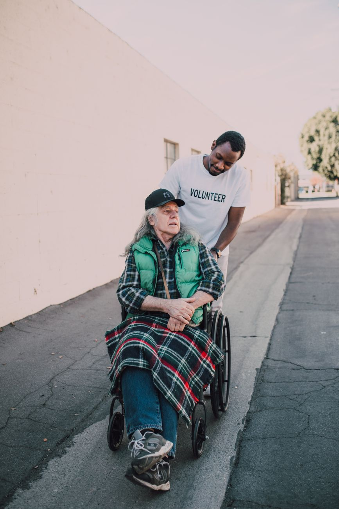

How it works
Someone nearby can help. Someone nearby needs you. This page spells out exactly what happens in between — what to write, how long it takes, who we check and how, what we won't do, and what any of it costs.
Asking for help

What to write
Keep it short and ordinary. We only need four things: what the job is, roughly where you are, when it would suit you, and anything a helper should know before they knock. "Front hedge is over the sidewalk, I can't manage the shears any more, I'm in Plano, any weekday morning, there's a dog but she's soft" is a perfect request.
You don't need to explain why you can't do it yourself. You don't need to prove anything. Nobody at this end is weighing your case up.
If writing isn't your thing, ring 0117 496 0188 and we'll write it down for you while you talk. Mondays to Fridays, 9am to 5pm, and a real person answers.
How fast a match usually comes
Most requests are matched within two to three days. Shopping runs and lifts around Plano often go the same day, because that's the kind of help most of our helpers sign up for. Garden work in winter and anything needing a van takes longer — a week or two is normal, and we'll tell you if it's heading that way rather than leaving you wondering.
You'll get a call or a text with your helper's first name before they come, plus the day and a rough time. If they can't make it, we ring you. We don't send anyone you haven't been told about.
You can ask more than once
There's no limit and no running tally. People ask us for a lift to a clinic appointment every six weeks for a year, and that's fine — it's what the service is for. Others ask once in five years. Both are normal use.
If what you need is the same thing every week, say so. We'll try to match you with one helper who can take it on regularly, so you're not meeting a stranger each time.
- Typical match time
- 2–3 days
- Requests we cap per person
- None
- Phone line
- Mon–Fri, 9–5
Offering help
You set the terms. We work around them, not the other way around. Nobody is ever sent a request outside what you've told us.
-
Your travel radius
Pick a distance you're happy to travel: half a mile, two miles, five. Most helpers choose one or two miles and walk to nearly everything. If you drive and you're up for lifts, you might set five. You can change it any time by replying to one of our texts.
-
The hours you're free
Tell us the blocks that actually work — Tuesday afternoons, alternate Saturdays, school hours in term time. One hour a month is a genuinely useful offer. We'd rather have your real availability than an optimistic one you end up canceling.
-
Jobs you'd rather not do
There's a list to tick: driving, ladders, lifting, pets, gardening, forms and paperwork, phone calls on someone's behalf, and company and conversation. Leave anything blank that isn't for you. No explanation needed, and nobody sees your list but us.
What a request looks like when it reaches you
A text or email with the job, the first name, the street (not the house number), the timing, and anything useful — stairs, a dog, hard of hearing. You reply yes or no. A no costs you nothing and doesn't move you down any list. We send the full address only once you've said yes.
After the visit, send us a one-line reply: done, or didn't happen, or something's not right here. That last one matters — if you think someone needs more than we offer, tell us and we'll pass it to the right service.
I said two hours a fortnight and a mile radius, and that's exactly what I get. No one has ever rung me up to guilt me into more. I've been doing it three years.
Marcus, helper in Plano
Our safety checks, in full
Every helper goes through all four of these before they meet anybody. There are no exceptions, including for people we already know.
-
Identity
We see photo ID — passport or driver's license — alongside something with the current address on it, dated within three months. This happens face to face at The Old Dairy or at one of our community hall sessions. We record that we've seen it; we don't keep copies of your documents.
-
References
Two, from people who aren't related to you and have known you at least two years. We contact both by phone, not just email, and we ask them specific questions about reliability and judgment. If we can't reach a referee, we ask for another.
-
DBS check
Every helper gets a basic DBS check, and anyone who may be alone with a person at risk gets an enhanced one. We pay the fee — it never comes out of your pocket. A record on a check isn't an automatic no; we talk it through, and what matters is relevance and honesty. Checks are renewed every three years.
-
The first-visit buddy rule
No helper's first visit to a new neighbor happens alone. Either a coordinator comes along, or an experienced helper does. It takes the pressure off both sides — the neighbor isn't opening the door to one stranger, and the helper isn't walking into a situation unsupported. After that first visit, it's up to the two of you.
And after that
Helpers carry a card with their name, photo and our phone number. If anyone turns up without one, don't let them in — ring us. We also check in with both sides after the first month of any regular arrangement, and we'll stop a match, no debate, if either person asks us to.
What we don't do
We're neighbors with an hour spare, not trained professionals. Knowing where we stop is part of keeping everyone safe. If you need one of the things below, here's who to call instead.
-
No personal care
No washing, dressing, toileting, moving someone, or help with medication. That's regulated work and it needs trained carers. Start with adult social care services in Plano on 0117 922 2700 for an assessment.
-
No money handling
Helpers don't take cash, cards, PINs or bank details, and they won't go to a cash machine for you. For a shop run, we use a contactless card you top up, or a relative pays online — we'll explain the options when we match you.
-
No medical advice
A helper can drive you to an appointment and sit in the waiting room. They can't advise on symptoms or medicines. Ring 111 for urgent-but-not-emergency advice, your GP for anything else, and 999 if it's an emergency.
-
No legal or money advice
We'll help you read a form and fill in the boxes you know the answers to. We won't tell you what to claim, sign or agree to. Citizens Advice Plano is free and genuinely good: 0808 278 7957.
We also don't do work that needs a trade qualification — electrics, gas, roofs, structural anything — or any job that needs more than one person and a ladder's worth of risk. If you ask and we have to say no, we'll always try to tell you who does do it.
Costs
Asking is free. Helping is free. There is no membership, no subscription, no "suggested donation" at the door, and no helper will ever ask you for money.
- To ask for help
- £0
- To sign up as a helper
- £0
- Mileage paid to drivers
- 45p per mile
How mileage works
If you drive someone, you can claim 45p a mile from us — not from the person you drove. Send us the date, the start and end points, and the mileage, either by text or on the paper slips we hand out. We pay by bank transfer on the first Friday of each month. Claims take about two minutes to submit and we don't ask for receipts under £20.
Plenty of helpers never claim. That's your call, and nobody is told either way. The fund that pays mileage comes from local grants and a handful of Plano businesses who sponsor us — not from the people asking for help.
Materials
If a job needs something bought — a bag of compost, a new lightbulb, a stamp — the neighbor pays for it directly, online or with the contactless card, before the visit. Helpers don't front costs and aren't reimbursed for them, which keeps money out of the doorway entirely.
Frequently asked questions
From people asking for help
Am I taking a place from someone worse off?
No. We're not rationing a scarce thing — we have helpers across most of Plano with hours going spare. If we're short in your area we'll tell you honestly, and it'll be a wait, not a refusal.
Do I have to be old, or ill, or on a low income?
No. We've helped new parents, people recovering from surgery, people who just moved here and don't know a soul, and people having a bad few months. If you need a hand, you qualify.
What if I don't get on with the helper?
Ring us and say so. You don't have to give a reason, and we won't tell them what you said. We'll match you with someone else. This happens a few times a year and it's nobody's failure.
Will you share my details?
Only with the helper who has said yes to your request, and only what they need: name, address, phone, and the job. We don't sell, swap or publish anything, and we delete your details twelve months after your last request unless you ask us to keep them.
Can a family member ask on my behalf?
Yes, as long as you know about it and you're happy. We'll speak to you directly before the first visit, even if it's a short call.
From people offering help
How long does signing up take?
Twenty minutes to fill in the form, then one session at a community hall for ID and a chat. The DBS check takes two to four weeks to come back. Most people are matched within a month of first getting in touch.
Do I need a car?
No. Over half our helpers don't drive. Shopping, gardening, paperwork, phone calls and company all happen on foot.
What if I can't do a job once I've started it?
Stop and ring us. Don't push on with something that feels beyond you or unsafe — a ladder, a heavy wardrobe, a conversation that's gone somewhere worrying. We'd far rather hear about it halfway through than afterwards.
Am I insured?
Yes. Our public liability policy covers helpers doing agreed Neighbourly Hands tasks. If you drive, tell your insurer you do voluntary driving — nearly all policies cover it at no extra cost, and we'll send you the wording to quote.
Can I take a break?
Any time, for any length of time. Text us "pause" and we stop sending requests until you say otherwise. No one will chase you.
Can I bring my child along?
For some jobs, yes — gardening and shopping, usually, and several families do it together. Mention it when you sign up and we'll flag the suitable requests. Lifts and indoor visits are adults only.
Still got a question?
Ask it here and we'll answer properly, usually within two working days. No sign-up, no obligation, and we won't add you to anything.